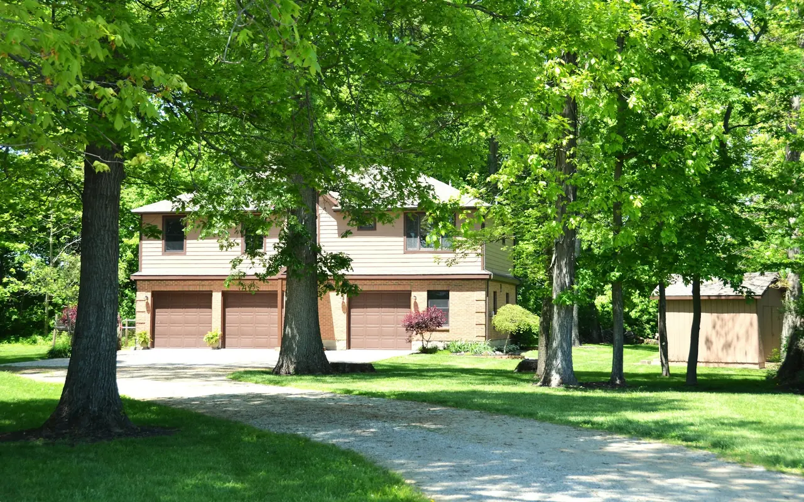

Lawrence NY · 11559 · Nassau County
Garage Door Repair Lawrence, NY
Same-day garage door repair throughout Lawrence NY 11559. From the estate properties along Causeway Road to the waterfront homes on Lawrence Bay — we arrive fast, work to the standard the homes here deserve, and provide a free written estimate and a written warranty on every repair. Marine-grade hardware available for South Shore waterfront properties.
- Same-Day Service
- Marine-Grade Hardware
- Custom Door Specialists
- Free Written Estimate
Garage Door Service in Lawrence
Lawrence NY 11559 — Estate Homes, Waterfront Properties & the Salt Air Challenge
Lawrence is distinctive among the Five Towns — one of Nassau County's most prestigious residential communities, with a housing stock that includes significant estate properties, large older homes on oversized lots, and waterfront properties along Lawrence Bay and Reynolds Channel. The garage door needs here are different from the rest of the Five Towns in two important ways.
First, the size and weight of the doors. Lawrence homes frequently have two and three-car garages with larger, heavier doors than the standard colonial double. Heavier doors require heavier torsion spring systems — more turns of wire, larger spring diameter, higher torque. A spring calibrated for a standard residential double door will not perform correctly on a heavier custom door. We carry commercial-weight springs on our trucks and correctly size the spring system to the actual door weight on every installation in Lawrence.
Second, the coastal environment. Lawrence sits directly on the South Shore waterfront. The salt air here is more concentrated than anywhere else in the Five Towns — properties on Causeway Road, Lawrence Bay, and the waterfront streets face genuine marine-environment hardware conditions. Standard galvanized steel cables corrode within 3–5 years on direct waterfront properties. We recommend marine-grade 316 stainless steel cables for Lawrence waterfront homes — the same specification used on marine hardware — and zinc-coated torsion springs that resist the salt oxidation that regular springs succumb to.
When Lawrence homeowners call us, they're not always dealing with an emergency — sometimes it's a door that's become noisy, a custom opener that needs programming, or a pre-purchase inspection of the garage system on a home they're considering. We handle all of it the same day with the same commitment to getting it right.
Lawrence Waterfront Hardware Recommendation
For Lawrence properties within direct salt air exposure of Lawrence Bay and Reynolds Channel — particularly those on Causeway Road, Central Avenue south of the railroad, and the waterfront streets — we recommend marine-grade 316 stainless steel lifting cables and zinc-coated torsion springs. The cost difference over standard hardware is modest. The lifespan difference in a direct marine environment is substantial. Ask about this upgrade when you call.
| Torsion Spring Replacement | $295 |
|---|---|
| Commercial-Weight Spring For heavier 2-3 car estate garage doors | $345 |
| High-Cycle Spring Upgrade | $380 |
| Standard Cable Replacement | $125 |
| Marine-Grade 316 SS Cables Recommended for Lawrence waterfront properties | $175 |
| Roller Replacement | $35/roller |
| Track Realignment | $175 |
| Opener Gear Kit | $130 |
| Safety Sensor Repair | $75–$150 |
| Annual Tune-Up | $99 |
| Written Estimate | FREE |
Starting prices. Spring pricing depends on the actual door weight and is confirmed in your free written estimate.
(516) 612-9317 — Same DayServices in Lawrence NY 11559
What We Repair & Install in Lawrence
Spring Repair & Sizing
Torsion spring replacement in Lawrence — correctly sized to the door weight. Many Lawrence estate homes have heavier double and triple doors that require springs beyond standard residential specification. We weigh and size the spring system to match the door on every installation, including commercial-weight springs for larger openings.
Marine-Grade Cable Service
Standard galvanized cables corrode rapidly in the Lawrence waterfront environment. We install marine-grade 316 stainless steel cables for properties near Lawrence Bay and Reynolds Channel — the same specification used on boat hardware. Both cables always replaced together. Dramatically longer service life in direct salt air exposure.
Custom Door Installation
Lawrence estate properties frequently call for doors beyond the standard catalog — custom sizes for non-standard openings, solid wood for historic homes, full-view aluminum and glass for contemporary renovations, or premium composite overlay that matches the architectural style. Free in-home estimate. We discuss every option without pressure.
Opener Service
Opener repair and installation for all Lawrence garage configurations. LiftMaster wall-mount openers are popular in Lawrence homes with finished garages where no overhead rail is desired. Battery backup important on the South Shore for storm outages. Multi-car garage control systems and smart home integration available.
Pre-Purchase Inspection
Lawrence real estate transactions frequently benefit from a garage door system inspection before closing. We provide a written inspection report covering spring condition, cable integrity, hardware wear, opener function, and safety compliance — useful documentation for buyers, sellers, and attorneys. Call to schedule.
Semi-Annual Tune-Up
Annual service is a minimum for Lawrence homes — semi-annual is better for direct waterfront properties where salt air accelerates hardware wear. Full 22-point inspection, marine-appropriate lubrication, hardware tightening, safety tests, and written condition report. Spring and cable life varies significantly by waterfront proximity.
Lawrence Homeowner Guide
Caring for Large Doors in a Marine Environment
Heavy multi-car doors and direct salt air exposure change what good maintenance looks like in Lawrence.
Match Springs to the Real Door Weight
Wider two- and three-car doors, and doors that have been re-clad or upgraded, can weigh far more than a standard double. Springs sized for a lighter door leave the opener doing the lifting. If a door was replaced or changed, have the spring system re-sized to its actual weight.
Inspect Cables Twice a Year
On waterfront blocks, standard galvanized cables can corrode within 3–5 years. At each semi-annual service, look for rust, broken strands, or fraying near the bottom brackets. If you see them, stop using the door and call us. When cables are due, marine-grade 316 stainless and zinc-coated springs last longer.
Prepare for Coastal Storms
Storm outages are a fact of life on the South Shore. Battery backup keeps a wall-mount or rail opener working when the power is out. In a multi-car garage, make sure everyone in the house knows how to use the manual release on each door.
Lawrence Garage Door FAQ
Questions from Lawrence Homeowners
What Lawrence NY 11559 homeowners ask us most — answered directly.
Who repairs garage doors in Lawrence NY?
Five Towns Garage Door provides same-day garage door repair throughout Lawrence NY 11559. Call (516) 612-9317 — we typically arrive within 2–4 hours, call 30 minutes before arrival, and provide a free written estimate before any work begins. Evenings, weekends, and holidays available.
My Lawrence garage door cables keep corroding — why?
Lawrence sits directly on the South Shore waterfront along Reynolds Channel and Lawrence Bay, which puts your property in a genuine marine salt air environment. Standard galvanized steel cables — the type installed on most residential doors — oxidize significantly faster in this environment, sometimes within 3–5 years. We install marine-grade 316 stainless steel cables for Lawrence properties near the water. The spec is the same used on boat hardware and provides dramatically longer service life. Call (516) 612-9317.
How much does garage door repair cost in Lawrence NY?
Extension spring repair starts from $145. Torsion spring replacement starts from $295. Marine-grade stainless steel cable replacement starts from $175 for Lawrence waterfront properties. Free written estimate before any work. Call (516) 612-9317.
Do you install custom garage doors in Lawrence NY?
Yes — solid wood, composite overlay, full-view aluminum and glass, and custom-painted steel doors are all available for Lawrence properties. Non-standard opening sizes are accommodated with custom orders, typically with a 2–4 week lead time from the manufacturer. We provide a free in-home estimate and discuss every option without pressure. Call (516) 612-9317.
My Lawrence home has a very large garage door — can you handle it?
Yes — we carry commercial-weight springs and oversized hardware for larger garage doors in Lawrence. A heavy carriage house or custom door that's 18 or 20 feet wide requires different spring sizing than a standard residential double. We assess the door weight and size the spring system correctly on every Lawrence installation. Call (516) 612-9317.
Do you do pre-purchase garage door inspections in Lawrence NY?
Yes — we provide written garage door system inspections for real estate transactions in Lawrence. The report covers spring condition and remaining cycle life, cable integrity, hardware wear, opener function and safety compliance, and any recommendations. Useful for buyers evaluating a property, sellers preparing for disclosure, and attorneys handling the transaction. Call (516) 612-9317 to schedule.
Also Serving
Other Five Towns We Service
Google Reviews
What Customers Say
4.7 out of 5 stars from 15 Google reviews (as of September 2026). Reviews are quoted as written.
Just purchased a new garage door & opener for our home from one of their many styles of garage door for sale. From the first phone call to the installation everything has been smooth and easy I love the way it turned out! The new door updated our garage and now we can open and close the door with our phone, which is helpful! The best place on Long Island for garage doors near me.
My opener's lift chain completely derailed from the gear assembly, leaving our SUV totally trapped inside the bay. The tech arrived with all the correct replacement garage door parts right inside his work vehicle to fix the mechanism. He re-aligned the motor assembly and completed the entire garage door repair so we could finally get out of the house.
The technician did a great job to fix my garage door ! I appreciate his recommendation to replace the one coil and to replace the cable too. he was effcient and fast, and polite. I was hesitant at first because of the additional cost, but he spoke to me safert issues are first! Thank you for a job well done !
Garage Door Repair Lawrence NY 11559
Same-day service · Marine-grade hardware · Custom door specialists · Free written estimate · Evenings & weekends
Main line: (516) 490-0931